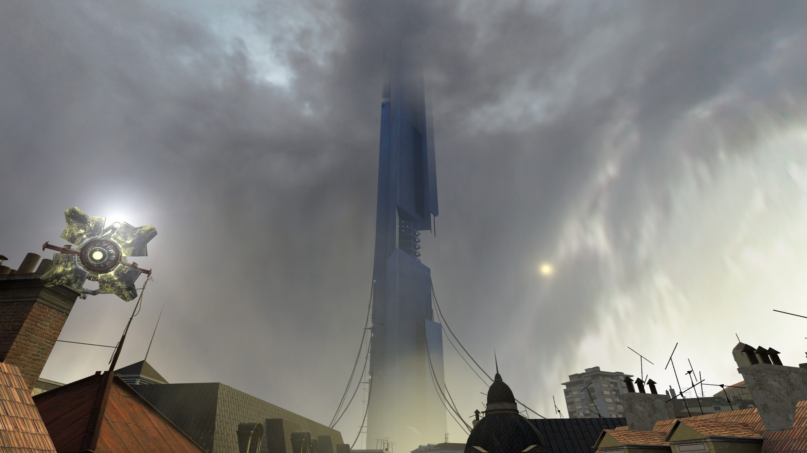

Невероятное сооружение, так любезно предоставленное Нашими Покровителями и используемое ныне в качестве Администрации для всей планеты.
Цитадель представляет из себя массивный металлический небоскрёб, поднявшийся на несколько километров от земли, а также содержащий подземную часть.